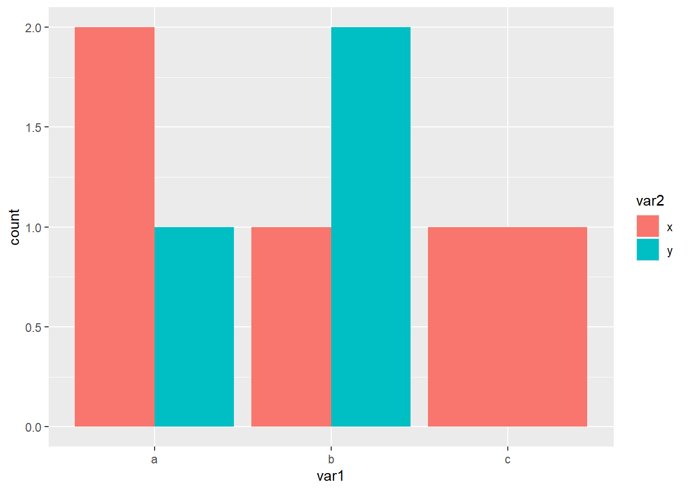
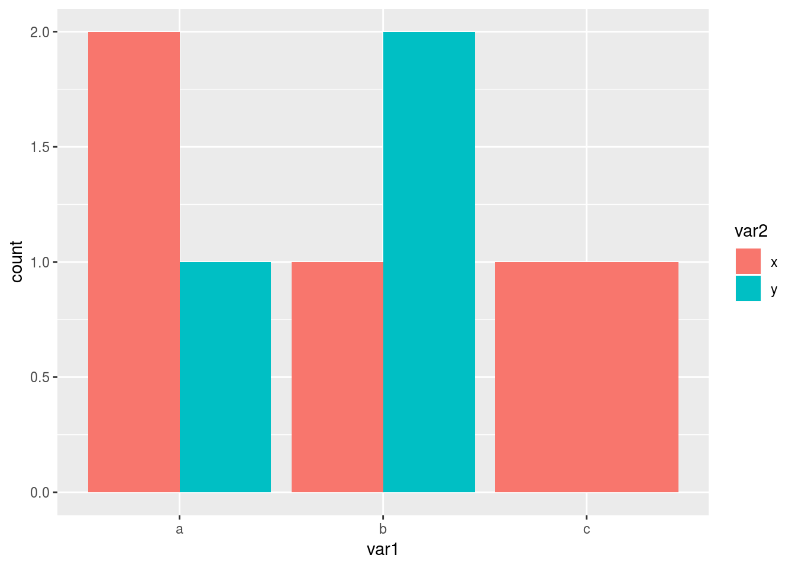
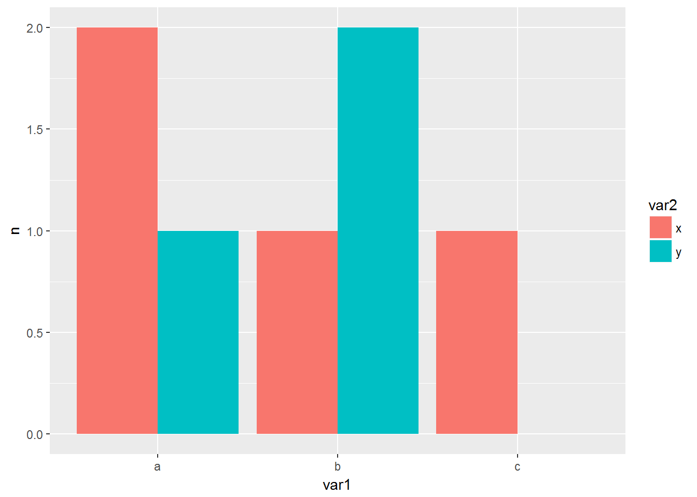
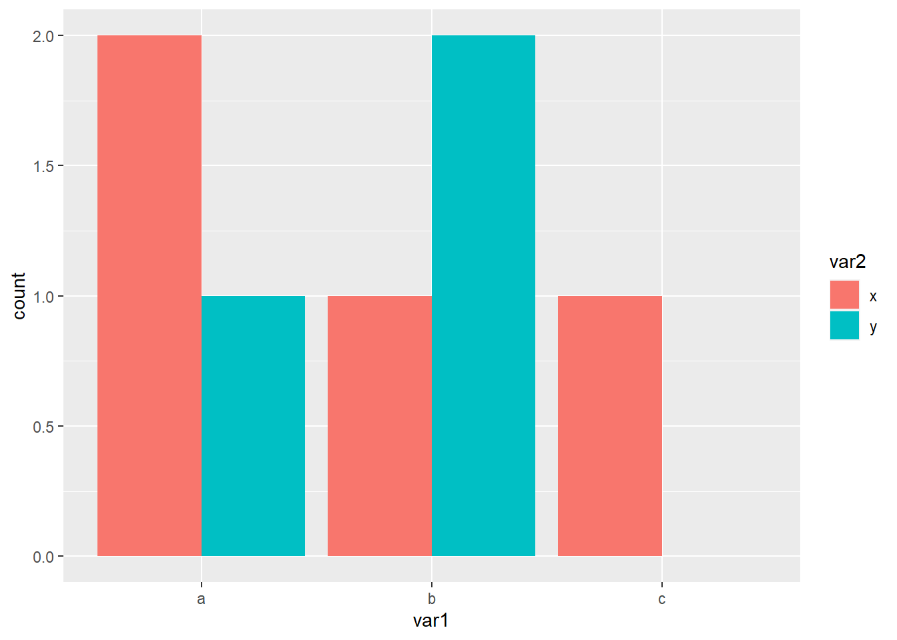

I’m wrting this down because it’s a problem I’ve tried to deal with twice in the last couple of weeks and I had to look the solution up both times. The second time, rather than just fix it I dug a little deeper to find out why something I thought would work didn’t.
Any way, the problem:
library(ggplot2)
fake_data <- data.frame(var1 = c("a", "a", "a", "b", "b", "b", "c"),
var2 = c("x", "x", "y", "x", "y", "y", "x"))
fake_data var1 var2
1 a x
2 a x
3 a y
4 b x
5 b y
6 b y
7 c xggplot(fake_data, aes(x = var1, fill = var2)) +
geom_bar(position = "dodge")
Now that all works fine but I don’t want the bar for c to be full width, just half width as the others are, so the missing data (or count of zero is clearer).
This same problem has been dealt with in two stackoverflow posts1 2 and Hadley Wickham (the package author) commented on the design of the position_dodge() in this issue. The basic idea is to stop ggplot from dropping the missing bar (or bar with count 0).
ggplot(fake_data, aes(x = var1, fill = var2)) +
geom_bar(position = "dodge") +
scale_x_discrete(drop = FALSE) +
scale_fill_discrete(drop = FALSE)
As you can see this makes no difference. The reason is because all the solutions count the data before plotting and use stat = "identity" and I wondered why that was necessary, why wouldn’t it work without it. To get the answer I had a look at the plot in more detail.
p = ggplot(fake_data, aes(x = var1, fill = var2)) +
geom_bar(position = "dodge")
ggplot_build(p)$data[[1]]
fill y count prop x PANEL group ymin ymax xmin xmax colour size
1 #00BFC4 1 1 1 1.225 1 2 0 1 1.00 1.45 NA 0.5
2 #F8766D 2 2 1 0.775 1 1 0 2 0.55 1.00 NA 0.5
3 #00BFC4 2 2 1 2.225 1 4 0 2 2.00 2.45 NA 0.5
4 #F8766D 1 1 1 1.775 1 3 0 1 1.55 2.00 NA 0.5
5 #F8766D 1 1 1 3.000 1 5 0 1 2.55 3.45 NA 0.5
linetype alpha
1 1 NA
2 1 NA
3 1 NA
4 1 NA
5 1 NAThe data only has 5 rows and so there isn’t any data to stop ggplot from dropping. It is necessary to count the data first.
# starting again
library(tidyverse)
fake_data <- data.frame(var1 = c("a", "a", "a", "b", "b", "b", "c"),
var2 = c("x", "x", "y", "x", "y", "y", "x"))
# count the data
count_fake = count(fake_data, var1, var2)
# fill in the missing combination
count_fake = complete(count_fake, var1, var2)
# plot the data
ggplot(count_fake, aes(x = var1, y = n, fill = var2)) +
geom_bar(stat = "identity", position = "dodge")
Note: In the development version of ggplot2 there is a much easier solution. First we need to install the development version (presuming you have already installed devtools.)
devtools::install_github("tidyverse/ggplot2")Then we have access to an additional argument within position_dodge().
library(ggplot2)
fake_data <- data.frame(var1 = c("a", "a", "a", "b", "b", "b", "c"),
var2 = c("x", "x", "y", "x", "y", "y", "x"))
ggplot(fake_data, aes(x = var1, fill = var2)) +
geom_bar(position = position_dodge(preserve = 'single'))